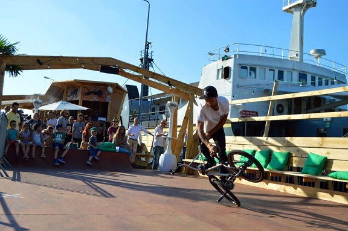
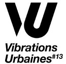
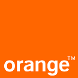
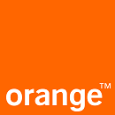

Inauguration, concert, promotion d'un produit: la démonstration de BMX peut être partout!

La démonstration de BMX est un des domaines de compétences favoris de BDXBMX. Avec plus de 10 ans d'expérience dans ce type d'animation, c'est un divertissement original et simple à mettre en oeuvre pour tout vos évènements. Nul besoin de structure complexe et coûteuse, une surface plane suffira aux riders. En plus d'être original, la démonstration de BMX flat permet au public d'être au plus proche de la scène, le succès est garanti!
Comment intégrer une démonstration de flat à un évènement?
Tout d'abord, il faut prévoir un espace d'évolution pour les riders: une surface plane, sans aucune installation spécifique, d'au moins 5x5 mètres. Les riders montreront leurs plus belles figures en s'adaptant à vos besoins: de 10 minutes à plusieurs jours consécutifs, c'est à vous de choisir.
Combien ça coute?
BDXBMX étant une association à but non lucratif, les riders ne sont donc pas payés directement. Le principe de fonctionnement de notre association est de réaliser des démonstrations dans le but de pouvoir financer les déplacements, l'entrainements et l'équipement des riders bordelais. Il faut donc compter en moyenne 300 euros pour une prestation.
Ils nous on fait confiance
 
